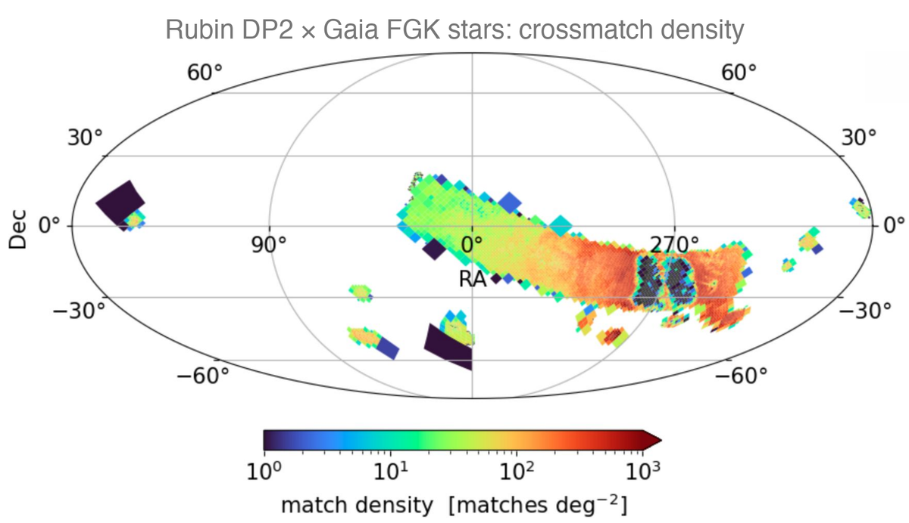
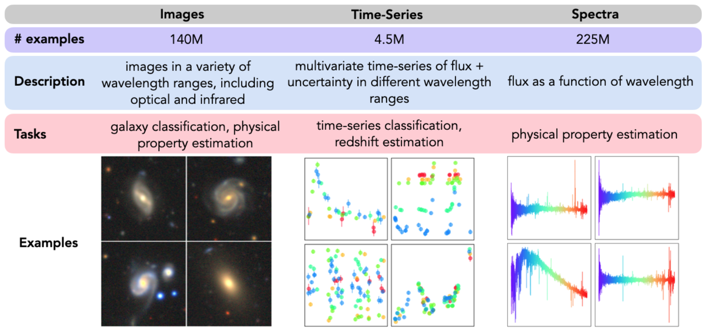
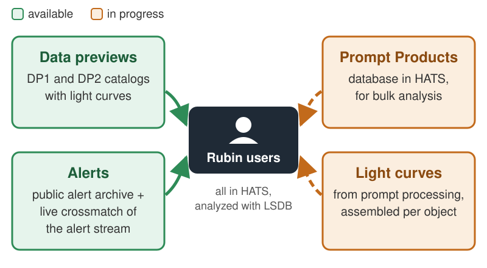
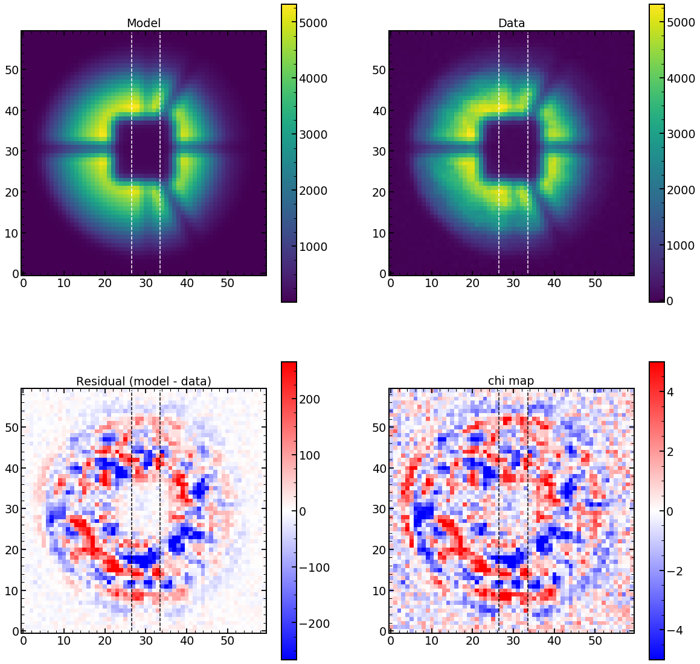
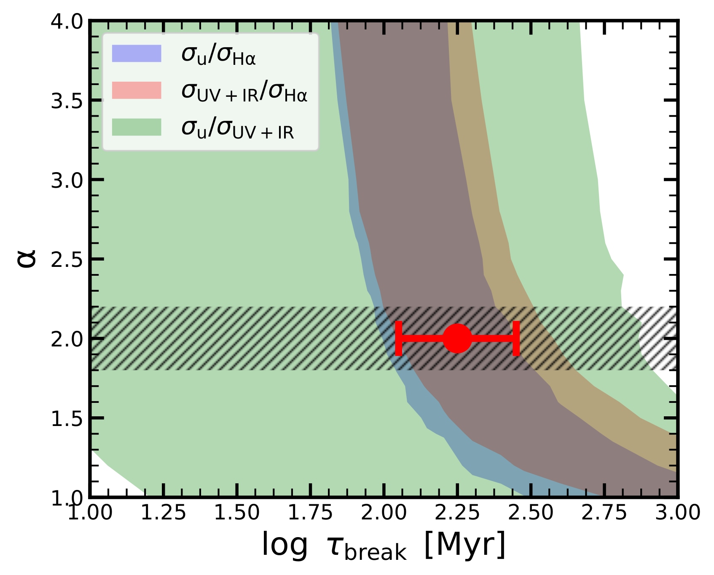
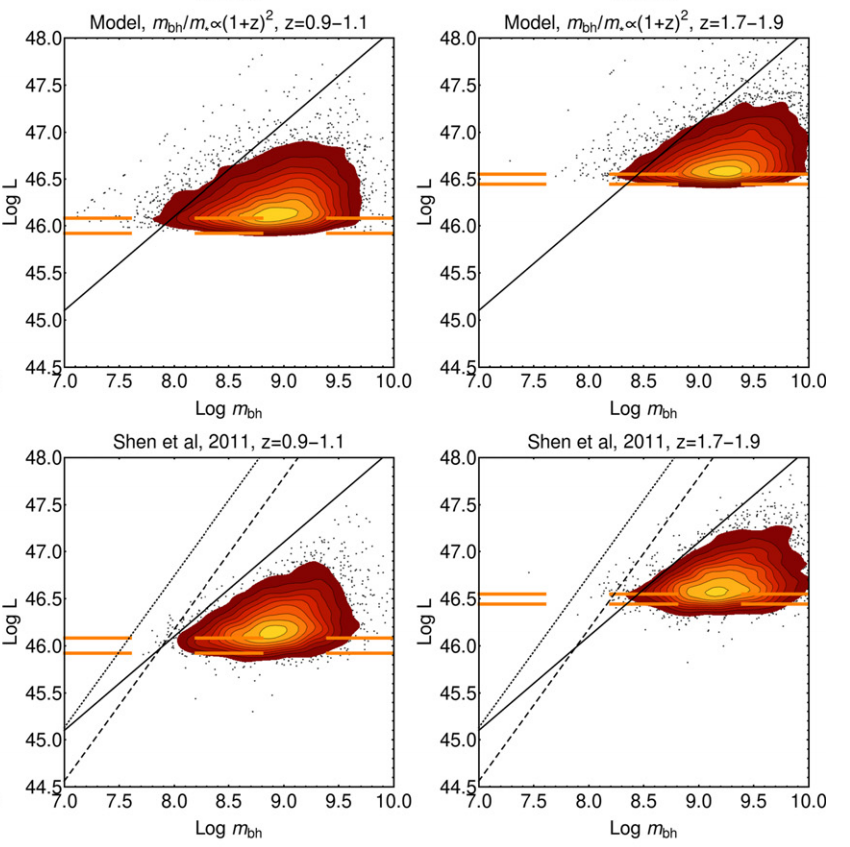
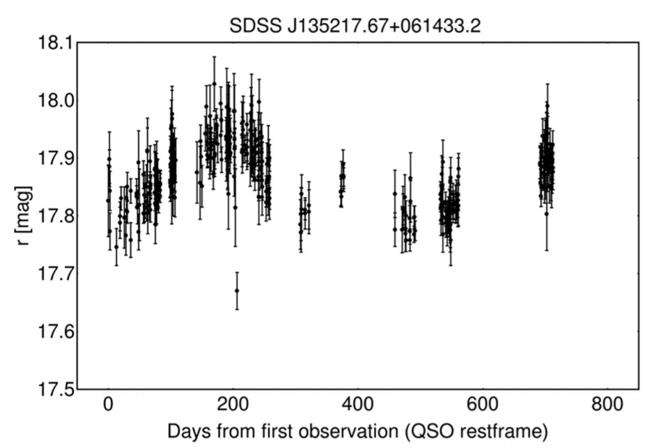
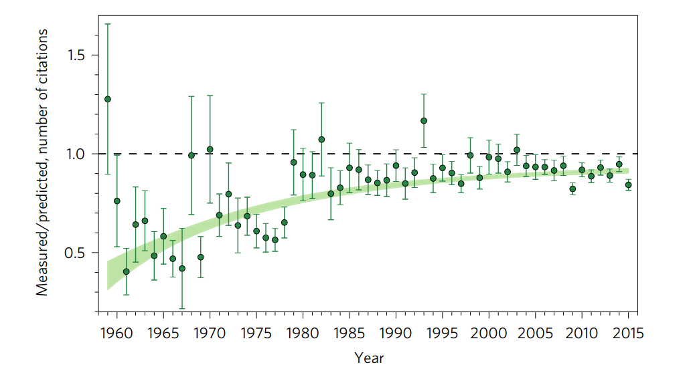

Hi! This is the personal webpage of Neven Caplar.
Research Scientist/Engineer · HATS/LSDB lead, LINCC Frameworks
Background: Trifid and Lagoon Nebulae, NSF–DOE Vera C. Rubin Observatory/NOIRLab/SLAC/AURA (CC BY 4.0)

News
- Nov 2026 Upcoming: Scialog: Early Science with the LSST hackathon in Tucson, Arizona.
- Nov 2026 Upcoming: Schmidt Observatory System Science Symposium in Florence, Italy.
- Oct 2026 LSDB and HATS v0.11.1 released.
- Sep 2026 Talk at LSST@Europe8 in Budapest, Hungary.
- Jul 2026 DOE Genesis Mission award to extend HATS and LSDB to multimodal data.
About Me
I am a research scientist at the University of Washington and a member of LINCC Frameworks. I lead the development of HATS and LSDB, an open-source, survey-agnostic format and toolkit for working with large astronomical catalogs. I am also a co-PI on the DOE Genesis Mission award, which extends HATS and LSDB to multimodal data such as images and spectra.
Previously, I worked on difference imaging algorithms for Vera C. Rubin Observatory, and, at Princeton University, on the development of a 2d reduction pipeline for the Prime Focus Spectrograph, the instrument operating on Subaru Telescope. I completed my Ph.D. at the Swiss Federal Institute of Technology (ETH) Zurich in 2017.
My research interests are mostly connected with the analysis of large datasets and variable sky research. You can find my resume here and short description of some of my projects below.
Projects
Map of the HATS and LSDB ecosystem: how survey data flows from telescopes to science →


Current · LINCC Frameworks
HATS and LSDB
I am the project owner and chief scientist for HATS and LSDB - an open-source, survey-agnostic format and toolkit for scalable analysis of large catalogs. They are used for data from many large surveys, such as Gaia and Rubin, with Euclid and Roman coming next. With LSDB, crossmatching all of Rubin DP2 with Gaia, a billion-row catalog against a billion-row catalog, takes under 3 minutes. The project is a part of LINCC Frameworks - a team developing state-of-the-art analysis software capable of meeting the scale and complexity of data from large survey telescopes.
Documentation · GitHub · Catalogs · Paper · Overview map
Figure: number of Gaia FGK stars matched to Rubin DP2 objects per square degree, computed with LSDB.


Current · LINCC Frameworks
Multimodal data for AI (DOE Genesis Mission)
Together with Carnegie Mellon University and SLAC, we are extending HATS and LSDB beyond catalogs to images, spectra and time series, so that data from many surveys can be accessed together and streamed directly into the training of AI models.
Figure adapted from The Multimodal Universe (CC BY 4.0).


Current · LINCC Frameworks
Rubin data in HATS
Now I am working on bringing Rubin Observatory data into HATS. The DP1 and DP2 data previews and the public alert archive are already available in HATS format; the Prompt Products Database and light curves from prompt processing are in progress. Before that, until October 2025, I worked on commissioning the Rubin Observatory, improving difference imaging, lightcurve construction and photometric performance.


2017 - 2022 · Princeton University
Prime Focus Spectrograph
My main effort was the 2d data pipeline for processing spectra taken by the Prime Focus Spectrograph, now operating on the Subaru Telescope. The aim of the project was to model the point spread function from defocused images to achieve high-quality subtraction of the skylines.
Selected earlier research
-

Star formation histories of galaxies as a stochastic process. With Sandro Tacchella we found that galaxies lose the memory of their previous star formation on a scale of roughly 200 Myr. Caplar & Tacchella 2019, MNRAS -

Galaxy-black hole co-evolution. A phenomenological model that explains the quasar luminosity function and the evolution of Eddington ratios; the black hole-stellar mass ratio was around ten times larger at redshift 2 than today. Caplar, Lilly & Trakhtenbrot 2018, ApJ -

Optical variability of AGN. 28,000 AGN with 2.4 million data points from the Palomar Transient Factory: more luminous AGN are less variable, and the power spectrum steepens for more massive objects. Caplar, Lilly & Trakhtenbrot 2017, ApJ -

Gender bias in astronomy citations. Using machine learning on over 200,000 papers, we found that papers written by women receive around 10% fewer citations than expected. Caplar, Tacchella & Birrer 2017, Nature Astronomy


Contact information
University of Washington, Department of Astronomy |
ncaplar[at]uw[dot]edu |